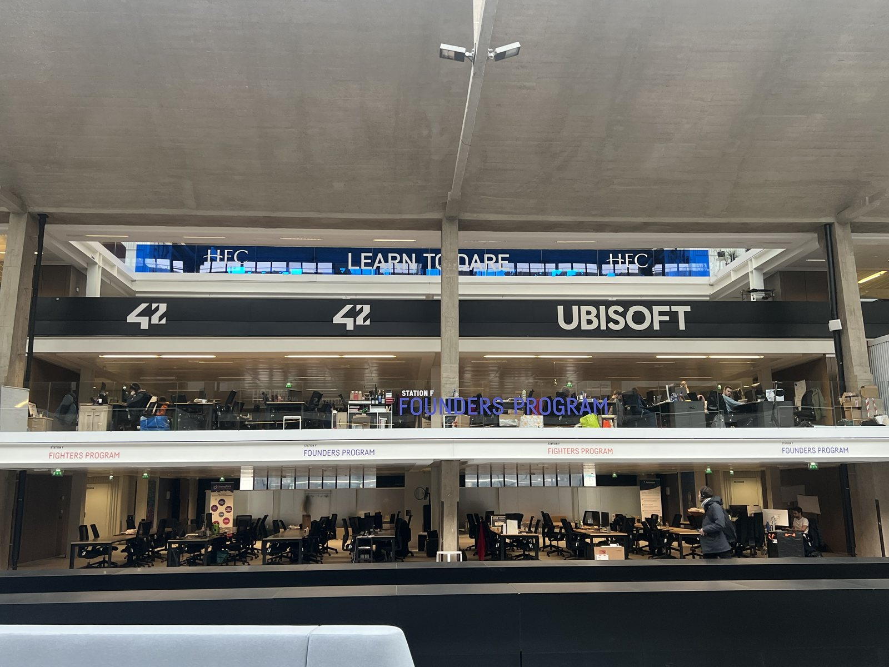

01どう動かしているのか。
独自運営と企業・大学等のプログラムが同居し、専門家の相談、投資家、ビザ・管理手続、住居等の資源へ参加者を接続する。2026年9月の公式要項ではFoundersは3〜18か月で一定の現地参加が必要。Fightersは無料で、最初の1か月の基礎段階後に有望案件を選び、専用席を含む第2段階へ進める。Landing Zoneは本格プログラムの前段の入口となる。2026年開始のF/aiは一般応募でなくパートナー等の推薦で選考し、技術力と商用化準備を要求する。同年9月第2期は26チームと34の企業・投資家パートナーを公表。『6か月で売上€100万』は目標であり達成実績ではない。接点の密度に加え、入口の違い・選抜・継続的な支援を制度にしている。
- 創業段階に合う入口を選ぶ
- 審査・推薦でプログラムへ
- 専門家・企業・投資家と接続
- 製品と販売を同時に検証
- 成長段階に応じ次の資源へ
02誰が負担し、誰が担うか。
創設者Xavier Nielによる施設取得、参加者の席料、パートナープログラム。Foundersは月€259〜/席、Landing Zoneは月€269税別/席、Fightersは無料。総運営収支・パートナー費用は未確認。
制度やプログラムの財源と、各参加企業・地域に発生する費用は同じではありません。公開範囲を超える案件別予算・契約条件は未確認です。
03確認できたこと。
2017年の開業から9年間で累計9,000超のスタートアップと運営者が報告。
読み取れる範囲：累計支援企業数であり、同時入居・生存・成長した企業数ではない。
原典で確かめる ↗ 出典の説明 ↓04日本で活かすなら。
本調査の提案：日本の地域拠点では『誰でも交流する場』の中に、初回相談、課題を持つ企業との案件形成、創業支援、成長支援という次の行動が違う入口を設ける。無料参加の裾野を残しつつ、個別伴走・専用席・企業向けプログラムの受益と負担を明確にする。施設に全機能を内製せず、専門支援機関に成果と役割を伴って委ねることも選択肢になる。ただし推薦だけに依存すると既存人脈のない挑戦者が排除される。公費を使う場合は公開応募枠、選考基準、低所得・地方在住者の参加費支援を併設し、採択後の売上や雇用を時点別に追跡する。
05そのまま真似できないこと。
有望なチームを選ぶ効果と、入居後の支援効果を分離できていない。資金調達は事業の持続性や地域への還元の代替指標ではなく、AI景気・投資市場にも左右される。推薦制の高選抜プログラムとFightersの包摂目的は異なり、同じKPIだけで評価すると使命を損なう。パリへの移住費・席料・滞在条件も参加障壁となる。
06次に、何を確かめるか。
提案・未実施：拠点運営者が新規相談30件を3か月で入口別に振り分け、専門家面談までの日数・有償受注・次段階進出・参加者負担を追跡。既存人脈のない応募者の通過率が下がる、または専門家につないでも案件が進まない場合は選考と支援者の責任を再設計する。
07現場を、写真と動画で。

HEC Paris Incubator · 2023-02-03
PHOTO: BobVillars · 掲載元 ↗ · CC BY-SA 4.0 ↗ · 縮小・表示枠に合わせた切り抜き。色変更なし。
冒頭写真：STATION Fの中央ホール。大空間の中にワークスペースや交流の場が並ぶ。
公式サイトで、写真・最新の活動を見る ↗